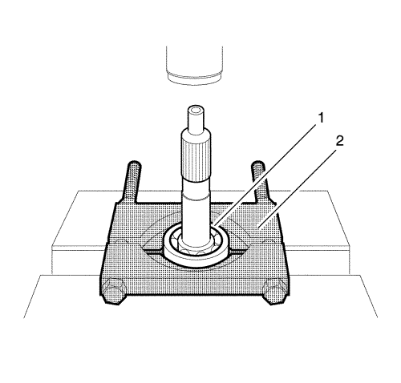
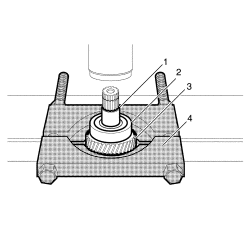
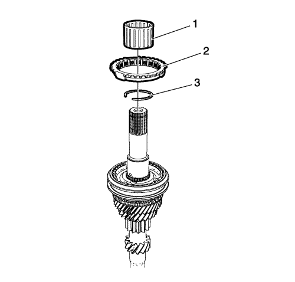
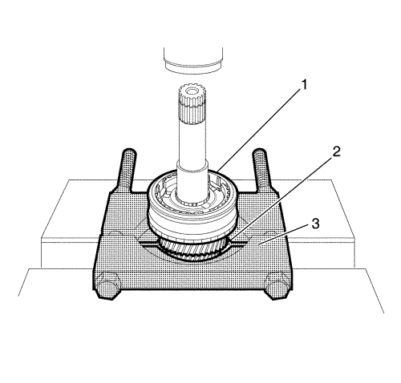
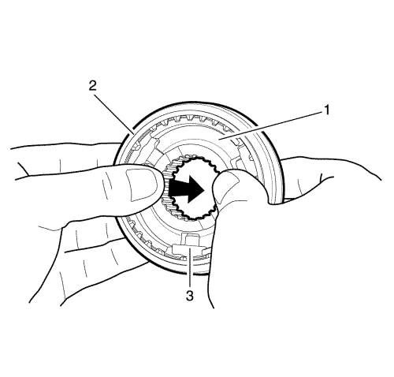
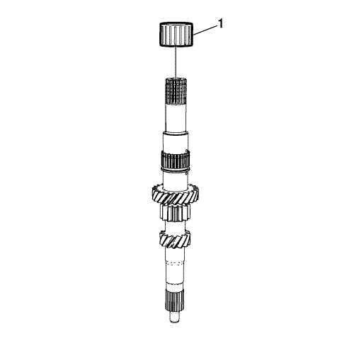

Desmontaje del eje de entrada
Herramientas especiales
DT-46494 Herramienta de desmontaje de engranajes y cojinetes
Consulte Herramientas especiales para información sobre herramientas locales equivalentes.

- Desmonte el mecanismo. Consultar Desmontaje de la caja de cambios .
- Coloque el cojinete con la herramienta de desmontaje de engranajes y cojinetes DT-46494 (2) hacia el cojinete derecho.
- Desmonte el cojinete derecho del eje primario (1) usando una prensa.

- Coloque la 4ª marcha con la herramienta de desmontaje de engranajes y cojinetes DT-46494 (4).
- Desmonte el distanciador de 5ª marcha (1), el cojinete izquierdo (2) y la 4ª marcha (3) con la prensa.

- Desmonte el cojinete de 4ª marcha (1).
- Desmonte el anillo del sincronizador de 4ª marcha (2).
- Desmonte el circlip de sincronizador de 3ª-4ª marcha (3).

- Coloque la 3ª marcha con la herramienta de desmontaje de engranajes y cojinetes DT-46494 (3).
- Desmonte el anillo del sincronizador del conjunto de cubo del sincronizador de 3ª-4ª marcha (1) y la 3ª marcha (2) con la prensa.

- Empuje el cubo (1) desde el conjunto del cubo del sincronizador 3ª-4ª marcha
- Desmonte el manguito del sincronizador (2) y la unidad de chaveta (3).

- Desmonte el cojinete de 3ª marcha del eje primario (1).
| © Copyright Chevrolet Europe. All rights reserved |